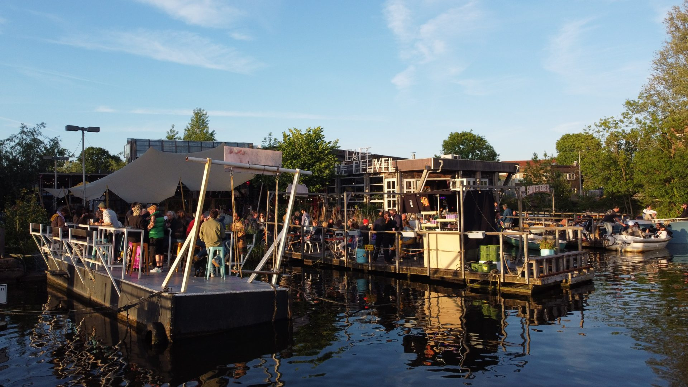
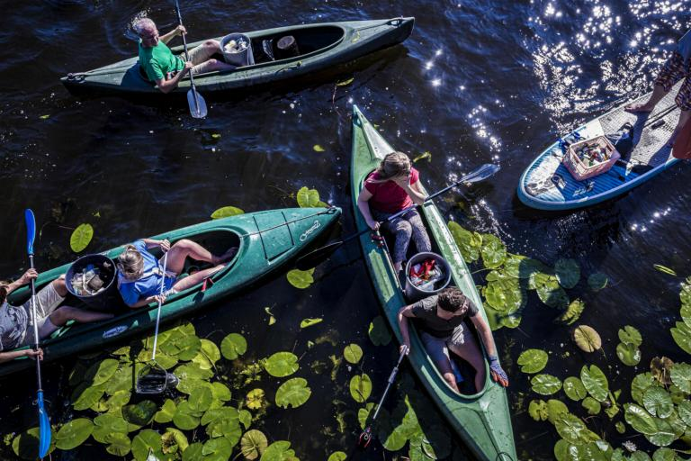

Welcome to AquaLens
This website was developed by the AquaLens team in collaboration with Joyce van den Berg from the City of Amsterdam. AquaLens is a project team composed of final-year students from the University of Amsterdam's BSc in Computational Social Science: Jesper Saakes, Celia Meissner, Maria Jose Pena, Dmitry Golovchits, Kian Baig, Martyna Piskorz, and Emily Palm. Joyce van den Berg is a landscape architect for the City of Amsterdam.
When faced with a challenge as large and complex as water quality, it can be tempting to give up. However, there are many ways that you as an individual can have an impact. This page presents three Dutch case studies that demonstrate that action on water quality issues is not only manageable, but something you can incorporate into your daily life.
The first step? Join our LinkedIn group dedicated to sharing global water quality initiatives and fostering discussion on water ecology.
👉 Join the LinkedIn Group
As a low-lying country, the Netherlands has a unique existential relationship to water. There’s a wealth of knowledge and experience around water management here, but also many myths. These case studies help dispel those myths.
De Ceuvel

De Ceuvel is a community built on the grounds of a former shipyard in the north of Amsterdam. The community entails office space, a well-known café, a floating hotel and galleries, some which are inhabited. From its onset, De Ceuvel was designed to be a fully circular community.
A big part of its focus on sustainability relies on its water management, seeing as it is built on a former shipyard. Helophyte filters are used to clean water water before disposing of it, there are community pumps that provide clean drinking water sourced from captured and purified rainwater, and struvite reactors are used to extract valuable soil nutrients from human wastewater.
Additionally, an aquaponic greenhouse produces much of the produce served at the café. Aquaponics in this context refers to a process where fish waste is used as a nutrient for plants, which then filter the water so it can be reused by said fish.
Most notably, compost toilets were used instead of a sewer system due to soil pollution. These toilets require no water and produce usable compost. This creative solution shows that sometimes, breaking convention leads to better outcomes.
These many small examples show that water quality does not run counter to function, but rather can be a part of the daily fabric of community and actually enhances function.
FilterOn Lake Lowlands

Music festivals are a huge part of the contemporary performing arts culture of the Netherlands. About 1100-1200 with more than 3000 attendants are organized. This gives the country one of the highest festival densities anywhere. All these festivals are each a challenge when it comes to sustainability. In our context, they can result in water pollution from festivalgoers.
In 2024, Lowlands Festival decided to flip the script on its head. Rather than resigning to water pollution, the festival made preserving the lake an interactive element of the festival. The minor lake surrounding the festival, colloquially known as “Lake Lowlands”, was cleaned throughout the festival by using filtration bikes. Festivalgoers were encouraged to both compete and collaborate in using these bikes to maintain the cleanliness of the lake. This process also contributed to research and water quality in smaller bodies of water, that are often not accounted for.
This shows that water quality management is not something that stands contrary to other activities and demands on the water, but rather can and should be integrated in these.
De Grachtwacht

De Grachtwacht is a volunteer group that meets weekly to canoe around the canals of Leiden, clearing them from plastic waste. Anyone is free them join on Sundays, with the possibility to join from the canal banks too.
Additionally, they research the sources of this plastic waste, which makes it easier to counter it. They also research the impact that this waste has on the wildlife that calls these canals and its surroundings home. Its most notorious findings in the canals are preserved for future research.
This demonstrates that clean water does not have to be a divisive issue, but rather that it can be a source of community building. De Grachtwacht also instills a sense of civic pride in the inhabitants of the Leiden that cannot easily be simulated by other means.
Water Management Starts with You
Now that these myths are dispelled, it has become evident that water management is not something that should just be left to experts, but rather is something that the general public can contribute to actively, or even passively in some cases.
However, this is not meant to portray Dutch water quality as superior. In fact, the country suffers from the worst water quality in all of Europe, but initiatives like this try to change that. This underscores the need for continued action.
Want more inspiring stories like these? Join our LinkedIn group and be part of the global water quality movement.
👉 Join the LinkedIn Group